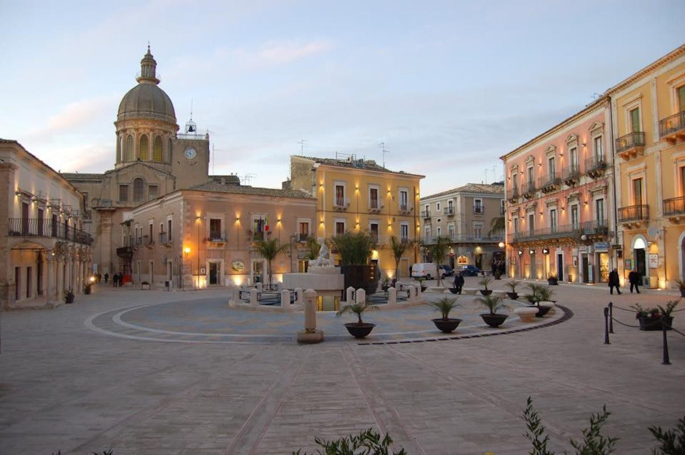

Vero e proprio agorà, al centro di essa si trova una mit ica fonte attorno alla quale si sono addensati i primi nuclei abitativi scampati alla distruzione di Kamarina o scesi dal Cozzo d’Apollo. In età romana, il sito abitato aveva, allora come oggi, al suo centro un’ampia area libera attorno alle limpide acque che sgorgavano dal sottosuolo, oggi purtroppo la sorgente non è più visibile. L’acqua assicurava la vita al nuovo nucleo abitato che, di fatto, galleggiava su essa. Presso la sorgente, la tradizione vuole che la Dea Diana si dissetasse e facesse il bagno. Il poeta latino Remmio Fanno nei suoi versi ha cantato i prodigi di queste acque che, se attinte da fanciulle impure, subito si sarebbero intorbidite. Ordalia pagana, questa, nota al Fazello e citata anche da Stanganelli nel volume “Vicende storiche di Comiso”, ricondotta a un remoto periodo preellenico. L’ordalia consisteva nel fatto che, quando una persona era accusata di colpe carnali, i sacerdoti la conducevano al fonte miracoloso, e fattegli compiere le purificazioni rituali, all’invocazione di Diana attingeva l’acqua e vi si versava del vino. Se innocente, il vino versato nell’acqua si mischiava, se colpevole rimaneva separato dall’acqua. In epoca romana, a poche decine di metri da essa, si costruì un importante complesso termale, ampliato in epoca bizantina, i cui resti sono ancora visibili all’imbocco con via Calogero. La piazza appare all’occhio dell’osservatore armoniosa e dignitosa anche se l’attuale sistemazione è relativamente recente giacché è stata realizzata tra la fine dell’800 e l’inizio del ‘900. La pavimentazione in basole e il nuovo maquillage del fonte, invece, è di qualche anno fa. Gli antichi palazzi eretti tra la fine del ‘400 e tutto il ‘500, infatti, non esistono più perché distrutti dal terremoto del 1693 o demoliti per far posto alle nuove costruzioni. Tuttavia la piazza ha conservato la sua struttura più antica, con le botteghe e luoghi di ristoro sostituite da uffici, esercizi commerciali, banche e bar. Su di essa, imponente, si erge la sagoma del Municipio, ultimato nel 1887, mentre l’edificio più antico pervenuto ai nostri giorni è il Palazzo Iacono-Ciarcià. Fu costruito poco prima del terremoto del 1693 e poi rifatto e migliorato dopo il terremoto. È dotato di una loggia o portico molto grazioso, tipico di un tardo barocco siciliano. I disegni della loggia furono quasi certamente dati dall’architetto netino Rosario Gagliardi e la sua costruzione completata tra il 1735 e il 1740. Proseguendo il giro in senso orario, intorno al 1900 è stato eretto l’Albergo e Ristorante Casmene, ribattezzato dopo il secondo conflitto mondiale “Moderno”. Attualmente, al primo piano ospita il comando di polizia municipale. È una costruzione sobriamente elegante, tipica dell’architettura comisana d’inizio Novecento dove, in origine al suo interno, si notavano dei leggeri richiami liberty, mentre il prospetto principale, semplice e severo, principale si affaccia sulla piazza. Nel 1915 fu edificato in piazza Fonte Diana il Palazzo Leopardi-Romano, originariamente a due piani, mentre l’ultimo è stato aggiunto successivamente, probabilmente negli anni Trenta del secolo scorso. Alcuni anni prima, nel 1894 era stato completato Palazzo Iacono. I due edifici, l’uno dopo l’altro, chiudono il lato est della piazza. Erano di famiglie nobili comisane che, come già era avvenuto alcuni secoli prima, avevano eretto le loro abitazioni nella piazza principale come affermazione del loro potere economico e politico. Palazzo Leopardi-Romano è stato abitato fino agli anni Settanta del secolo scorso.